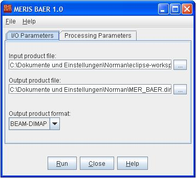

| BAER Processor |
|

I/O Parameters Tab

Processing Parameters Tab
 to invoke a standard file dialog. to invoke a standard file dialog.
to invoke a standard file dialog. to invoke a standard file dialog.The following table describes the BAER specific processing request file parameter. For a detailed description of the processing request file concept and file specification please look at the general description section.
| Parameter name | Description | Type | Example Value |
|---|---|---|---|
| type | Request type. Mandatory attribute of the Request element |
String | "BAER" |
| bitmask | Bitmask expression which evaluates to a Boolean value. Pixel is used for processing only if the bitmask evaluates to true. |
String | "l2_flags.LAND" |
| aer_phase_lut | Lookup table for aerosol phase function coefficients. Can be "LACE-98", "OPAC_AC" or "OPAC_CC" | String | "LACE-98" |
| atm_corr_method | Method used for atmospheric correction. Can be "SMAC" or "UBAC". | String | "UBAC" |
| cloud_process | Whether or not only a cloud mask shall be derived. | Boolean | "true" |
| baer_process | Whether or not the BAER algorithm shall be applied. If true, aerosol parameters are generated. | Boolean | "true" |
| atm_cor_process | Whether or not atmospheric correction shall be applied. If true, corrected reflectances are generated. | Boolean | "true" |